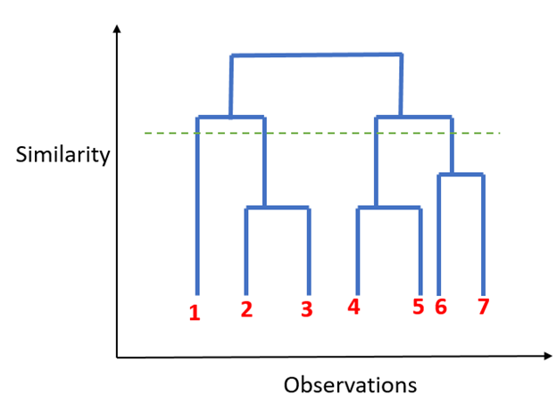

Bumblebee
Megatron
Grimlock
Starscream
Hotrod
Unicron
Prowl
Optimus
The Problem from our perspective
- There are vast amounts of unstructured data that are underutilised
- How can we make better use of this data?
- Can we intelligently group this unstructured data and produce sensible labels?
The Data
Data Issues
- Spelling mistakes
- Special characters
- Abbreviations & codes
- Obscure entries
- Inconsistencies in recording formats
- The range in level of detail

The Goal
A hierarchical structure that would automatically asign labels for each tier based on the data
Natural Language Processing
(NLP)
What is it?
A set of techniques and tools to turn the language we speak, write or sign into machine interpretable representations.
Well is it going from:
'Malcolm Tucker is my favorite TV series character.'
To:
01001101 01100001 01101100 01100011 01101111 01101100 01101101 00100000 01010100 01110101 01100011 01101011 01100101 01110010 00100000 01101001 01110011 00100000 01101101 01111001 00100000 01100110 01100001 01110110 01101111 01110010 01101001 01110100 01100101 00100000 01010100 01010110 00100000 01110011 01100101 01110010 01101001 01100101 01110011 00100000 01100011 01101000 01100001 01110010 01100001 01100011 01110100 01100101 01110010 00101110
Why is it hard?
- Language is a product of evolution.
- e-liquid
- mansplain
- ransomware
- deglobalization
- hangry
- Massive issues surrounding syntactic, phonetic and semantic ambiguity
- "Time flies like an arrow."
- "Fruit flies like a banana."
The tools and techniques used for the purposes of solving these issues are are numerous.
It is a very vast field.
So how do we then represent language?
The goal is to have a set of real numbers for each word/sentence/book that represent that text within numerically based on some sort of properties of the text.
Disclaimer: that is a very vague definition by me. But I hope it makes sense.| type of representation | representation |
|---|---|
| one hot encoding | {w1:1,w2:1,w3:1,w4:0,...wn:1} |
| count vectorisation | {w1:2,w2:1,w3:2,w4:0,...wn:1} |
| term frequency inverse document frequencey | {w1:0.03,w2:0.23,w3:0.76,w4:0,...wn:0.4} |
| word2vec/fastText | {n1:0.12,n2:0.52,...,n300:0.003,} |
Word2Vec

Word2Vec
Imagine if I had only 2 numbers. I could then plot them!
 A very simplistic explanation of fastText is that it is just an extention of this that deals with words
it has never seen before and can handle misspellings etc.
A very simplistic explanation of fastText is that it is just an extention of this that deals with words
it has never seen before and can handle misspellings etc.
Our results with a similar model
- The model was trained on the entire English Wikipedia.
- Although it sounds fun we didn't do it, we got a pre-trained model
- We might want to explore a more suitable textual corpus and train our own in the future.


How do we get the correct bubbles/clusters and labels?
Now that we have embedded the items in space, we can proceed to use clustering techniques.
Simply put, we can use algorithms that will find clusters in the space and then assign all items within the cluster to a 'bucket'
We use heirarchical clustering which produces something like this:
We got the clusters
Now what?
Given we have a basket of text items, we now take each of these baskets and push it through a little pipeline that will try to find a nice (or at least usable) label for the basket.
1. Edit distance

2. Word Grams

3. Char Grams
Our basket:
- chronology
- biology
- topology
- criminology
- ideology
Will get labeled to: "ology"
4. Wordnet

These methods are done in sequence and whichever one gets a label first that method will be applied.
This is what we get:

Summary of pipeline

Post-processing
So now we have some predicted labels for the data we had, but they sometimes (often) come out nonsensical. However, the groupings of original items that fall under these labels, still make sense.
For example, you might have a final label as `frozen`, but all the items within it could be food items.
This allows us to classify these labels into food all in one go, by correcting the predicted label. The question is how do we facilitate that.
So what next?
Well, the idea is to make a dataset that makes optimus useless!
Unstructured & unlabeled --> Structured & labeled
We want to go straight from the text, to a defined classification.
By having nicely labeled data we are able to build classifiers.
Raw data -> Premade categories (HS, COICOP or any other classification)